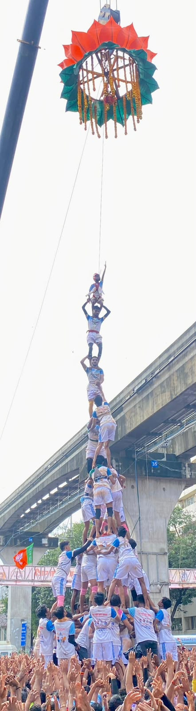

नरेश तोरस्कर
संस्थापक व अध्यक्ष
एकता | शिस्त | परंपरा | जिद्द
गोविंदा आला रे आला...
८ थरवाले
आमच्याबद्दल
चिंचपोकळीच्या मातीतून एकता, शिस्त, परंपरा आणि जिद्दीच्या बळावर उभे राहिलेले चिंतामणी प्रतिष्ठान हे सामाजिक बांधिलकी आणि गोविंदा संस्कृतीची जपणूक करणारे प्रतिष्ठान आहे.
समाजसेवा, क्रीडा, पर्यावरण संवर्धन, आरोग्यविषयक उपक्रम आणि गोविंदा पथकाच्या माध्यमातून समाजाशी असलेले नाते अधिक दृढ करण्याचा आमचा सतत प्रयत्न आहे.

आमचा प्रवास
चिंतामणी प्रतिष्ठान हे केवळ गोविंदा पथक नसून सामाजिक बांधिलकी, संस्कृती, क्रीडा आणि सेवाभाव यांचा सुंदर संगम आहे.
प्रत्येक उपक्रमातून समाजासाठी काहीतरी सकारात्मक करण्याचा आणि पुढील पिढीपर्यंत आपली परंपरा अभिमानाने पोहोचवण्याचा आमचा प्रयत्न आहे.
एकत्र येऊन मोठी स्वप्ने साकारण्याची ताकद.
प्रत्येक यशामागे शिस्तीचा मजबूत पाया.
संस्कृती आणि गोविंदा परंपरेचा अभिमान.
अडचणींवर मात करून पुढे जाण्याची जिद्द.
आमचे पथक
संस्थापक व अध्यक्ष

उपाध्यक्ष
यशोगाथा
लवकरच अधिक माहिती येथे उपलब्ध होईल.
लवकरच अधिक माहिती येथे उपलब्ध होईल.
लवकरच अधिक माहिती येथे उपलब्ध होईल.
चिंतामणी साठी प्रतिष्ठान कडून


चिंतामणी प्रतिष्ठानच्या माध्यमातून चिंतामणी उत्सवासाठी आधुनिक आणि सुरक्षित हायड्रॉलिक तराफा उभारण्याचा संकल्प करण्यात आला आहे.
परंपरेसोबत आधुनिकतेची सांगड घालत हा उपक्रम पुढील पिढीसाठी एक प्रेरणादायी पाऊल ठरेल.
उपक्रम
कार्यक्रमाची सविस्तर माहिती लवकरच जाहीर करण्यात येईल.
आमचा संकल्प
चिंतामणी उत्सवाची परंपरा अधिक सुरक्षित, आधुनिक आणि भव्य करण्यासाठी हायड्रॉलिक तराफा उभारण्याचा आमचा प्रमुख संकल्प आहे.
सहकार्य
चिंतामणी प्रतिष्ठानच्या विविध सामाजिक आणि सांस्कृतिक उपक्रमांसाठी सहकार्य करणाऱ्या सर्वांचे मनःपूर्वक आभार.
प्रायोजकांची माहिती लवकरच येथे उपलब्ध होईल.सोशल मीडिया
चिंतामणी प्रतिष्ठानच्या सामाजिक उपक्रम, गोविंदा पथकातील क्षण, कार्यक्रम आणि नवीन अपडेट्स पाहण्यासाठी आमच्या Instagram प्रोफाइलला भेट द्या.
Follow us on Instagram @chintamanipratishtan ↗संपर्क
अ/११, अष्टविनायक इमारत,
दत्ताराम लाड मार्ग,
चिंचपोकळी मुंबई ४०००७०
सामाजिक
सामाजिक उपक्रम
रक्तदान शिबीर
रक्तदान हेच जीवनदान.
सामाजिक बांधिलकी
समाजासाठी एक पाऊल.
समाजसेवा
सेवेतून समाधान.
हिरवा निसर्ग, आपली जबाबदारी
वृक्षारोपण उपक्रम.
मायेचा घास - अन्नदान सेवा
टाटा रुग्णालयाजवळ रुग्णांच्या नातेवाईकांसाठी अन्नदान सेवा.
दृष्टी हीच सृष्टी
मोफत नेत्र तपासणी शिबिर.
सेवा हीच खरी भक्ती
अनाथालयातील सेवाभावी उपक्रम.
बीच स्वच्छता अभियान
स्वच्छ समुद्रकिनारा, सुंदर पर्यावरण.
दिव्यांग बांधवांना मोफत व्हील चेअर वाटप
गरजू बांधवांना मदतीचा हात.
कबड्डी संघ
क्रीडा, संघभावना आणि जिद्द.